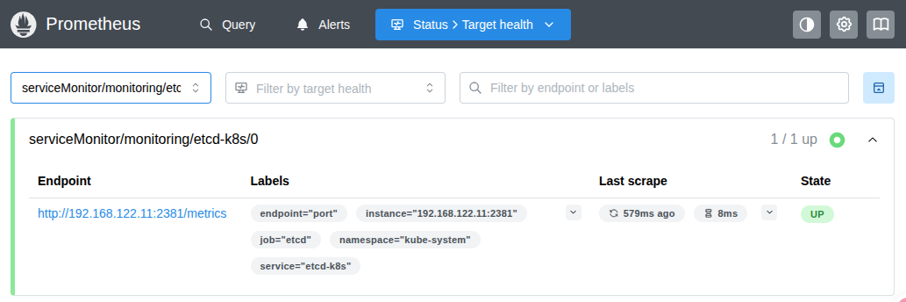

Kube-prometehus#
Kube-prometheus 安装#
创建namespace & CRD资源#
git clone -b release-0.18 https://gh-proxy.org/https://github.com/prometheus-operator/kube-prometheus.git
cd kube-prometheus/
kubectl apply --server-side -f manifests/setup
持久化数据#
# prometheus数据持久化
vim manifests/prometheus-prometheus.yaml
...
version: 3.12.0
# 数据持久化 ,添加如下内容
retention: 180d
storage:
volumeClaimTemplate:
spec:
storageClassName: nfs-client
accessModes: ["ReadWriteOnce"]
resources:
requests:
storage: 200Gi
# alertmanager数据持久化
vim manifests/alertmanager-alertmanager.yaml
...
version: 0.33.0
# 添加如下内容:
storage:
volumeClaimTemplate:
spec:
storageClassName: nfs-client
accessModes: ["ReadWriteOnce"]
resources:
requests:
storage: 10Gi
# Grafana 数据持久化
~/kube-prometheus# cat > manifests/grafana-pvc.yaml << EOF
---
apiVersion: v1
kind: PersistentVolumeClaim
metadata:
name: grafana-pvc
namespace: monitoring
spec:
storageClassName: nfs-client
accessModes:
- ReadWriteOnce
resources:
requests:
storage: 10Gi
EOF
vim manifests/grafana-deployment.yaml
...
volumes:
# 注释下面的内容，声明使用的PVC
volumes:
# - emptyDir: {}
- name: grafana-storage
persistentVolumeClaim:
claimName: grafana-pvc
应用资源清单#
kubectl apply -f manifests/
kubectl get pod -n monitoring
NAME READY STATUS RESTARTS AGE
alertmanager-main-0 2/2 Running 0 9m8s
alertmanager-main-1 2/2 Running 0 9m8s
alertmanager-main-2 2/2 Running 0 9m8s
blackbox-exporter-9f8c5d9fb-sfwvb 3/3 Running 0 9m36s
grafana-667558d6b6-2lvpq 1/1 Running 0 109s
kube-state-metrics-6fccf575d5-q4gnj 3/3 Running 0 9m35s
node-exporter-4ltzc 2/2 Running 0 9m35s
node-exporter-57d9h 2/2 Running 0 9m35s
node-exporter-695vz 2/2 Running 0 9m35s
node-exporter-w49c5 2/2 Running 0 9m35s
prometheus-adapter-6695cb6f7d-4rxwr 1/1 Running 0 9m34s
prometheus-adapter-6695cb6f7d-rd2bq 1/1 Running 0 9m34s
prometheus-k8s-0 2/2 Running 0 9m7s
prometheus-k8s-1 2/2 Running 0 9m7s
prometheus-operator-7f4f4f79d5-t9lt6 2/2 Running 0 9m34s
使用NodePort暴露服务#
# prometheus http://192.168.122.11:32090
kubectl patch svc prometheus-k8s -n monitoring --type='merge' -p '{
"spec": {
"type": "NodePort",
"ports": [{
"port": 9090,
"targetPort": 9090,
"nodePort": 32090
}]
}
}'
# grafana http://192.168.122.11:32030
kubectl patch svc grafana -n monitoring --type='merge' -p '{
"spec": {
"type": "NodePort",
"ports": [{
"port": 3000,
"targetPort": 3000,
"nodePort": 32030
}]
}
}'
# alertmanager http://192.168.122.11:32093
kubectl patch svc alertmanager-main -n monitoring --type='merge' -p '{
"spec": {
"type": "NodePort",
"ports": [{
"port": 9093,
"targetPort": 9093,
"nodePort": 32093
}]
}
}'
kubectl get svc -n monitoring
NAME TYPE CLUSTER-IP EXTERNAL-IP PORT(S) AGE
alertmanager-main NodePort 10.105.211.61 <none> 9093:32093/TCP 3m33s
alertmanager-operated ClusterIP None <none> 9093/TCP,9094/TCP,9094/UDP 3m5s
blackbox-exporter ClusterIP 10.99.15.82 <none> 9115/TCP,19115/TCP 3m33s
grafana NodePort 10.102.83.104 <none> 3000:32030/TCP 3m32s
kube-state-metrics ClusterIP None <none> 8443/TCP,9443/TCP 3m32s
node-exporter ClusterIP None <none> 9100/TCP 3m31s
prometheus-adapter ClusterIP 10.110.241.197 <none> 443/TCP 3m31s
prometheus-k8s NodePort 10.106.82.178 <none> 9090:32090/TCP 3m31s
prometheus-operated ClusterIP None <none> 9090/TCP 3m3s
prometheus-operator ClusterIP None <none> 8443/TCP 3m30s
删除默认的网路策略#
需要删除默认的访问策略才能访问到UI
访问Grafana Dashboard ID:13105

访问Prometheus UI

访问Alertmanager UI

完善监控#
添加kube-scheduler监控#
# 查看 kube-scheduler 的Service monitoring定义
~/kube-prometheus# cat manifests/kubernetesControlPlane-serviceMonitorKubeScheduler.yaml
apiVersion: monitoring.coreos.com/v1
kind: ServiceMonitor
metadata:
labels:
app.kubernetes.io/name: kube-scheduler
app.kubernetes.io/part-of: kube-prometheus
name: kube-scheduler
namespace: monitoring
spec:
endpoints:
- bearerTokenFile: /var/run/secrets/kubernetes.io/serviceaccount/token
interval: 30s
port: https-metrics
scheme: https
tlsConfig:
insecureSkipVerify: true
- bearerTokenFile: /var/run/secrets/kubernetes.io/serviceaccount/token
interval: 5s
metricRelabelings:
- action: drop
regex: process_start_time_seconds
sourceLabels:
- __name__
path: /metrics/slis
port: https-metrics
scheme: https
tlsConfig:
insecureSkipVerify: true
jobLabel: app.kubernetes.io/name
# 通过 selector.matchLabels 匹配 kube-system 这个命名空间下面匹配具有 app.kubernetes.io/name=kube-scheduler标签的 Service 实现自动发现
namespaceSelector:
matchNames:
- kube-system
selector:
matchLabels:
app.kubernetes.io/name: kube-scheduler
# 因为匹配不到所以没法自动发现
~/kube-prometheus# kubectl get svc -n kube-system -l app.kubernetes.io/name=kube-scheduler
No resources found in kube-system namespace.
# 创建具有app.kubernetes.io/name=kube-scheduler标签的 Service 与 ServiceMonitor 进行关联
## 调整 kube-schduler 静态Pod监听端口为 0.0.0.0
vim /etc/kubernetes/manifests/kube-scheduler.yaml
...
spec:
containers:
- command:
- kube-scheduler
- --authentication-kubeconfig=/etc/kubernetes/scheduler.conf
- --authorization-kubeconfig=/etc/kubernetes/scheduler.conf
- --bind-address=0.0.0.0
- --kubeconfig=/etc/kubernetes/scheduler.conf
- --leader-elect=true
## 确认更改生效
~# ss -tnlp|grep 10259
LISTEN 0 32768 *:10259 *:* users:(("kube-scheduler",pid=95096,fd=3))
## 查看当前集群Pod的 Labels
kubectl describe pod kube-scheduler-k8s-master01 -n kube-system|grep -A 3 -i labels
Labels: component=kube-scheduler
tier=control-plane
Annotations: kubernetes.io/config.hash: b11c69c6646cbac8e949844eea79a5b0
kubernetes.io/config.mirror: b11c69c6646cbac8e949844eea79a5b0
## 创建Service对象
mkdir -pv exts
cat > exts/kube-scheduler-service.yaml << 'EOF'
apiVersion: v1
kind: Service
metadata:
namespace: kube-system
name: kube-scheduler
labels: # 必须和上面的 ServiceMonitor 下面的 matchLabels 保持一致
app.kubernetes.io/name: kube-scheduler
spec:
selector:
component: kube-scheduler
ports:
- name: https-metrics
port: 10259
targetPort: 10259 # 需要注意现在版本默认的安全端口是10259
EOF
kubectl apply -f exts/kube-scheduler-service.yaml
kubectl get svc -n kube-system -l app.kubernetes.io/name=kube-scheduler
NAME TYPE CLUSTER-IP EXTERNAL-IP PORT(S) AGE
kube-scheduler ClusterIP 10.98.18.221 <none> 10259/TCP 20s

添加kube-controller监控#
# 查看 kube-controller 的Service monitoring定义
cat manifests/kubernetesControlPlane-serviceMonitorKubeControllerManager.yaml
...
jobLabel: app.kubernetes.io/name
namespaceSelector:
matchNames:
- kube-system
selector:
matchLabels:
app.kubernetes.io/name: kube-controller-manager
~# kubectl get svc -n kube-system -l app.kubernetes.io/name=kube-controller-manager
No resources found in kube-system namespace.
# 创建具有app.kubernetes.io/name=kube-controller-manager标签的 Service 与 ServiceMonitor 进行关联
## 调整 kube-controller-manager 静态Pod监听端口为 0.0.0.0
vim /etc/kubernetes/manifests/kube-controller-manager.yaml
...
spec:
containers:
- command:
- kube-controller-manager
- --allocate-node-cidrs=true
- --authentication-kubeconfig=/etc/kubernetes/controller-manager.conf
- --authorization-kubeconfig=/etc/kubernetes/controller-manager.conf
- --bind-address=0.0.0.0
ss -tnlp|grep 10257
LISTEN 0 32768 *:10257 *:* users:(("kube-controller",pid=2581722,fd=4))
## 查看当前集群Pod的 Labels
kubectl describe pod kube-controller-manager-k8s-master01 -n kube-system|grep -A 3 -i labels
Labels: component=kube-controller-manager
tier=control-plane
Annotations: kubernetes.io/config.hash: c765fbe50cdb7ec8a3756e2b8f514fa6
kubernetes.io/config.mirror: c765fbe50cdb7ec8a3756e2b8f514fa6
## 创建Service对象
cat > exts/kube-controller-manager-service.yaml << 'EOF'
apiVersion: v1
kind: Service
metadata:
namespace: kube-system
name: kube-controller-manager
labels:
app.kubernetes.io/name: kube-controller-manager
spec:
selector:
component: kube-controller-manager
ports:
- name: https-metrics
port: 10257
targetPort: 10257 # controller-manager 的安全端口为10257
EOF
kubectl apply -f exts/kube-controller-manager-service.yaml
kubectl get svc -n kube-system -l app.kubernetes.io/name=kube-controller-manager
NAME TYPE CLUSTER-IP EXTERNAL-IP PORT(S) AGE
kube-controller-manager ClusterIP 10.110.87.34 <none> 10257/TCP 0s

添加etcd监控#
# 修改etcd监听端口
vim /etc/kubernetes/manifests/etcd.yaml
containers:
- command:
- etcd
- --advertise-client-urls=https://192.168.122.11:2379
...
- --initial-advertise-peer-urls=https://192.168.122.11:2380
- --initial-cluster=k8s-master01=https://192.168.122.11:2380
- --key-file=/etc/kubernetes/pki/etcd/server.key
- --listen-client-urls=https://192.168.122.11:2379,https://192.168.122.11:2379
- --listen-metrics-urls=http://0.0.0.0:2381
- --listen-peer-urls=https://192.168.122.11:2380
ss -tnlp|grep 2380
LISTEN 0 32768 192.168.122.11:2380 0.0.0.0:* users:(("etcd",pid=2587637,fd=3))
ss -tnlp|grep 2381
LISTEN 0 32768 *:2381 *:* users:(("etcd",pid=2587637,fd=11))
## 创建 Etcd ServiceMonitor对象
cat > exts/kube-etcd-servicemonitor.yaml << 'EOF'
apiVersion: monitoring.coreos.com/v1
kind: ServiceMonitor
metadata:
name: etcd-k8s
namespace: monitoring
labels:
k8s-app: etcd-k8s
spec:
jobLabel: k8s-app
endpoints:
- port: port
interval: 15s
selector:
matchLabels:
k8s-app: etcd
namespaceSelector:
matchNames:
- kube-system
EOF
kubectl apply -f exts/kube-etcd-servicemonitor.yaml
## 创建Service对象满足 ServiceMonitor 关联条件
cat > exts/kube-etcd-service.yaml << 'EOF'
apiVersion: v1
kind: Service
metadata:
name: etcd-k8s
namespace: kube-system
labels:
k8s-app: etcd
spec:
type: ClusterIP
clusterIP: None
ports:
- name: port
port: 2381
---
apiVersion: v1
kind: Endpoints
metadata:
name: etcd-k8s
namespace: kube-system
labels:
k8s-app: etcd
subsets:
- addresses:
- ip: 192.168.122.11 # 指定etcd节点地址，如果是集群则继续向下添加
nodeName: etcd-k8s-master01
ports:
- name: port
port: 2381
EOF
kubectl apply -f exts/kube-etcd-service.yaml
kubectl get svc -n kube-system -l k8s-app=etcd
NAME TYPE CLUSTER-IP EXTERNAL-IP PORT(S) AGE
etcd-k8s ClusterIP None <none> 2381/TCP 3s
